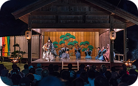

В японской культуре белая змея (Сирохэби) считается священным посланником богини удачи Бэндзайтен и главным символом богатства. Суеверие гласит, что встреча со змеёй или ношение её символа притягивает финансовое благополучие. Связь змей с деньгами идёт от буддийской богини Бэндзайтен (одной из семи богов удачи), которая покровительствует воде, музыке и богатству. Белая змея является её верным слугой и средством передвижения.
По этой причине во многих японских святилищах Бэндзайтен (например, на острове Эносима) продаются амулеты в виде змей.
Кошельки из змеиной кожи: в Японии до сих пор популярны белые кошельки со змеиным принтом или из настоящей кожи для привлечения богатства.
Обереги омамори: в синтоистских храмах покупают небольшие тканевые мешочки с изображением змеи для финансовой удачи.
Фигурки из белого фарфора: их ставят в домах и магазинах возле кассы для привлечения клиентов и денег.
ДРУГИЕ СТАТЬИ
Читайте больше статей, чтобы глубже погрузиться в культуру Японии
СУЕВЕРИЯ ЯПОНЦЕВ
В Японии цифра 4 находится под настоящим культурным запретом, и причина этого кроется в языке.
СУЕВЕРИЯ ЯПОНЦЕВ
В Японии цифра 4 находится под настоящим культурным запретом, и причина этого кроется в языке.
СУЕВЕРИЯ ЯПОНЦЕВ
В Японии цифра 4 находится под настоящим культурным запретом, и причина этого кроется в языке.
СУЕВЕРИЯ ЯПОНЦЕВ

В Японии цифра 4 находится под настоящим культурным запретом, и причина этого кроется в языке.